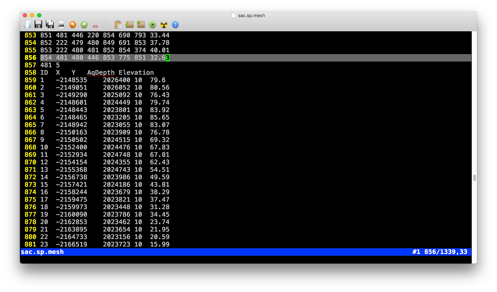

Chapter 3 SHUD模型软件与数据
3.1 安装 SHUD and rSHUD
本章介绍SHUD模型和rSHUD的安装过程，以及必要的开发库的安装。
3.1.1 SUNDIALS/CVODE
SHUD模型的求解需要SUNDIAL中CVODE库的支持。 SUNDIALS（SUite of Nonlinear and Differential/ALgebraic equation Solvers）由六个求解器组成；其中的 CVODE 是一个用于求解刚性和非刚性常微分方程系统（初始值问题）的数值求解器，数学表达为： \(y' = f(t,y)\). CVODE支持可变阶精度、可变步长数值方法。CVODE字母组合含义为“C版本的可变系数常微分方程求解器(Variable-Coefficient Ordinary Differential Equation Solver)” 。使用SHUD模型只需要CVODE支持，因此无需安装SUNDIALS所有求解器，只需要安装CVODE即可。
因为SUNDIALS/CVODE持续更新中，代码和函数定义等等变化较大，因此SHUD模型通常仅支持CVODE较新版本，并非所有版本都可支持。
SUNDIALS/CVODE的安装方法有两种：（1）自行下载安装包； （2）使用SHUD源代码的安装脚本。
3.1.1.1 使用脚本安装CVODE
源代码文件夹中的configure.sh文件是自动安装CVODE的脚本——可以自动从github上下载CVODE最新源代码并通过cmake编译并安装在用户目录下。
3.1.1.2 自行下载并安装CVODE
SUNDIALS/CVODE 代码的下载地址为：https://computation.llnl.gov/projects/sundials/sundials-software。
CVODE 5.x安装步骤：
- 进入命令行界面，并解压下载好的cvode压缩包。
- 在CVODE的根目录下新建文件夹 builddir， 并进入该文件夹。
mkdir builddir
cd builddir/- 测试 ccmake. 如果没有
cmake请安装。
ccmake - 运行ccmake配置安装环境。
ccmake ../sundials/cvode-5.0.0首先出现的是空白配置页面。按c开始配置。
上图为默认的配置信息图片上的四处配置信息需要注意，值需要改为下面的值。OPENMP值需要您的系统支持OpenMP，因此在确认您的系统支持OpenMP的情况下打开。
BUILD_CVODE = ON
CMAKE_INSTALL_PREFIX = ~/sundials
EXAMPLES_INSTALL_PATH = ~/sundials/examples以上值修改完成后，按c确认配置。
ccmake开始自动配置安装参数。当配置完成后，按g生成配置文件并退出。
- 然后使用make编译并安装：
make
make install 3.1.2 编译SHUD
编译信息保存在文件Makefile，其中关键的编译参数:
- SUNDIALS_DIR的保存路径（非常关键）. 默认值为 ~/sundials，如果您已经安装到此路径，即可保持默认值。
- OpenMP的路径。当您的系统支持OpenMP时，可根据实际安装路径配置。
- SRC_DIR路径。默认值为
SRC_DIR = .，即当前源码所在路径。 - BUILT_DIR路径，默认值为
BUILT_DIR = .，即当前源码所在路径。
配置好Makefile文件即可编译，使用以下命令进行编译：
make clean
make shud更多可选的编译参数：
make all- 清理旧的编译文件，并编译SHUD和SHUD_omp文件。make help- 展示编译的帮助信息。make shud- 编译shud模型的可执行文件。make shud_omp- 编译OpenMP支持的并行版本，编译后的可执行文件名为shud_omp。
3.1.2.1 OpenMP（可选）
当需要并行计算时，需要安装OpenMP。以下为Mac OS上安装的参数：
brew install llvm clang
brew install libomp
compile flags for OpenMP:
-Xpreprocessor -fopenmp -lomp
Library/Include paths:
-L/usr/local/opt/libomp/lib
-I/usr/local/opt/libomp/include3.1.2.2 运行 SHUD 可执行文件
运行SHUD模型，请在命令行内执行一下命令：
./shud <projectname>命令的参数模式：
./shud [-0] [-p projectfile] [-c calibrationfile] [-o output] [-n Num_Threads] <project_name>-0空计算。读取输入文件并写出结果文件，但是内部没有计算。仅仅用于验证输入文件格式的可靠性和可用性。<project name>项目名称。所有的项目文件必须以此开头。[-p projectfile]指定的项目配置文件，文件中包含了所有输入文件的地址。[-c calibrationfile]指定的参数校准文件（.cfg.calib), 默认的文件为input/xx/xx.cfg.calib。[-o output_folder]制定的结果文件输出地址。默认的输出地址为output/projname.out。[-n Num_Threads]并行计算的线程数量。此参数仅在并行计算打开时可用。
当shud 程序正常运行时，屏幕输出应该如下图所示：
3.1.3 rSHUD
rSHUD是一个标准R包，但尚未向CRAN提交，因此需要通过github以源码方式安装。在R环境中执行以下命令即可自动安装rSHUD。 关于rSHUD的内容，请参阅@Shu2024gmd.
如果您的电脑上尚未在R环境中安装devtools，请先安装。
install.packages('devtools')然后通过devtools从github上安装rSHUD。
devtools::install_github('SHUD-System/rSHUD')rSHUD依赖的R工具包包括：
- Rcpp
- reshape2
- ggplot2
- gridExtra
- grid
- fields
- xts
- hydroGOF
- zoo
- raster (>= 2.1.0)
- sp
- rgeos
- RTriangle
- rgdal (>= 1.1.0)
- proj4
- abind
- utils
- lubridate
- geometry
- methods
- ncdf4
- GGally
- doParallel
3.2 模型输入数据
本节从原始数据要求到输入文件内涵，向用户详细介绍模型输入数据。
3.2.1 原始数据
| 类型 | 数据名 | 必要性 | 要求(格式、步长、数量） | 说明 |
|---|---|---|---|---|
| 空间数据 | 流域边界 | 高 | 矢量 | 连续、封闭、唯一多边形； |
| 空间数据 | 河流网络 | 高 | 矢量 | 河流具有方向性；河流无向下分叉； |
| 空间数据 | 高程 | 高 | 0 | 单位：米 |
| 空间数据 | 土地利用分类 | 中 | 矢量/栅格 | \(n_{lc}\)个分类 |
| 空间数据 | 土壤分类 | 中 | 矢量/栅格 | \(n_s\)个分类 |
| 空间数据 | 气象站点 | 中 | 矢量/栅格 | \(n_{fc}\)个站点 |
| 参数 | 土地利用 | 中 | \(n_{lc}\) 组 | 土地利用的水力学参数 |
| 参数 | 土壤 | 中 | \(n_s\)组 | 土壤性质：Silt百分比、Clay百分比、有机质含量、Bulk Density |
| 时间序列数据 | 气象驱动 | 高 | 小时～日 | 降雨、气温、湿度、辐射、风速、气压 |
| 时间序列数据 | 叶面积指数(LAI) | 中 | 小时～月 | 每类土地利用一个LAI时间序列 |
| 时间序列数据 | 融化系数 | 低 | 小时～月 | 一个时间序列 |
| 时间序列数据 | 观测数据 | 高 | 小时～月 | 通常为径流数据、地下水、蒸散发等 |
3.2.1.1 数据实例
| 南苏丹Pongo流域原始数据实例：流域边界（绿色实线），河流（红色实线）、DEM(背景)和气象站点覆盖范围（黑色虚线）。气象数据站点为GLDAS数据，因此为$ 0.25 x 0.25 $度覆盖范围。 |
| (a) Percentage of silt | (b) Percentage of Clay |
| (c) Organic mater (Organic Carbon) | (d) Bulk density |
| 南苏丹Pongo流域土壤数据：Silt百分比，Clay百分比，有机物含量，Bulk Density。数据来源：ISRIC_SoilGrids。 |
| 南苏丹Pongo流域土地利用信息。土地利用数据来自USGS GLC数据。 |
| FLDAS数据的覆盖范围，即气象站点位置信息。 |
| FLDAS的气象驱动数据。 |
3.2.2 模型输入文件
输入文件列表
| File | Category | 备注 | Header | # of column |
|---|---|---|---|---|
| .mesh | sp | 三角形单元定义 | 是 | |
| .att | sp | 单元属性表 | 是 | |
| .riv | sp | 河流 | 是 | |
| .rivseg | sp | 三角形单元与河道单元拓扑信息 | 是 | |
| .calib | cfg | 物理参数校准文件 | 是 | |
| .para | cfg | 模型运行设置参数文件 | 是 | |
| .ic | cfg | 模型初始条件 | 是 | |
| .geol | para | 地下水层的水力学参数 | 是 | |
| .soil | para | 浅层土壤的水力学参数 | 是 | |
| .lc | para | 土地利用的水力学和能量参数 | 是 | |
| .forc | tsd | 气象驱动数据文件的列表 | 是 | |
| .csv | tsd | 气象驱动时间序列数据 | 是 | |
| .lai | tsd | 叶面积指数 | 是 | |
| .obs | tsd | 用于校准观测时间序列数据 | 是 | |
| .mf | tsd | 融雪参数时间序列数据 | 是 | |
| .rl | tsd | 计算潜在蒸散发的粗糙度时间序列数据 | 是 | |
| gis/domain | Shapefile | 三角形单元的矢量文件 | x | x |
| gis/river | Shapefile | 河段的矢量文件 | x | x |
| gis/seg | Shapefile | 被三角形分割的河段矢量文件 | x | x |

在文件夹 gis 和 fig 中的文件与SHUD模拟无关，然后在数据分析和可视化中有很大作用，因此保留在输入文件当中。
3.2.3 空间数据
3.2.3.1 .sp.mesh 文件

.mesh 文件中有两个表格，第一个表格为三角形的组成和拓扑关系；第二个表格为组成三角形的节点坐标信息。
表格 1 (三角形单元的几何定义)
表头
| 值1 | 值2 |
|---|---|
| 行数 ( \(N_{cell}\)) | 列数 (\(8\)) |
- 表
| 列 | 含义 | 取值范围 | 单位 | 备注 |
|---|---|---|---|---|
| ID | 单元序号 \(i\) | 1 ~ \(N_{cell}\) | - | |
| Node1 | 三角形单元第1角点\(i\) | 1 ~ \(N_{node}\) | - | |
| Node2 | 三角形单元第2角点 \(i\) | 1 ~ \(N_{node}\) | - | |
| Node3 | 三角形单元第3角点 \(i\) | 1 ~ \(N_{node}\) | - | |
| Nabr1 | 三角形单元第1邻居序号\(i\) | 1 ~ \(N_{cell}\) | - | |
| Nabr2 | 三角形单元第2邻居序号\(i\) | 1 ~ \(N_{cell}\) | - | |
| Nabr3 | 三角形单元第3邻居序号\(i\) | 1 ~ \(N_{cell}\) | - | |
| Zmax | 三角形单元z中心点地表高程 | -9999 ~ +inf | \(m\) |
Block 2 (三角形的三个角点的信息)
表头:
| 值1 | 值2 |
|---|---|
| 行数( \(N_{node}\)) | 列数 (\(5\)) |
- Table
| 列 | 含义 | 取值范围 | 单位 | 备注 |
|---|---|---|---|---|
| ID | 点序号 \(i\) | 1 ~ \(N_{cell}\) | - | |
| X | x坐标 \(i\) | 1 ~ \(N_{node}\) | - | |
| Y | y坐标 \(i\) | 1 ~ \(N_{node}\) | - | |
| AqDepth | 含水层厚度(地表至不透水层距离)\(i\) | 0 ~ +inf | \(m\) | |
| Elevation | 点的高程（z坐标） \(i\) | -9999 ~ +inf | \(m\) |
3.2.3.2 .sp.att文件
- 表头
| 值1 | 值2 |
|---|---|
| 行数( \(N_{cell}\)) | 列数 (\(7\)) |
- Table
| 列 | 含义 | 取值范围 | 单位 | 备注 |
|---|---|---|---|---|
| ID | 单元序号\(i\) | 1 ~ \(N_{cell}\) | - | |
| SOIL | 土壤类型序号 | 1 ~ \(N_{soil}\) | - | |
| GEOL | 类型序号 | 1 ~ \(N_{geol}\) | - | |
| LC | 类型序号 | 1 ~ \(N_{lc}\) | - | \(N_{lc}\) = \(N_{lai}\) |
| FORC | 气象站点序号 | 1 ~ \(N_{forc}\) | - | |
| MF | 融雪指数序号 | 1 ~ \(N_{mf}\) | - | |
| BC | 边界条件序号 | 1 ~ \(N_{bc}\) | - | |
| SS | 源汇序号 | 1 ~ \(N_{bc}\) | - |
3.2.3.3 .sp.riv文件
- 表头
| 值1 | 值2 |
|---|---|
| 行数( \(N_{riv}\)) | 列数 (\(5\)) |
- 表
| 列 | 含义 | 取值范围 | 单位 | 备注 |
|---|---|---|---|---|
| ID | 河段序号\(i\) | 1 ~ \(N_{river}\) | - | |
| DOWN | 下游河段序号 | 1 ~ \(N_{river}\) | - | Negative vlaue indicates outlet |
| Type | 河流参数序号 | 1 ~ \(N_{rivertype}\) | - | |
| Slope | 河床底坡度 | -10 ~ 10 | \(m/m\) | Height/Length |
| Length | 河段长度 \(i\) | 0 ~ inf | \(m\) |
3.2.5 模型配置文件
3.2.5.1 .cfg.para文件
- Table
| 列 | 含义 | 取值范围 | 单位 | 推荐值 |
|---|---|---|---|---|
| VERBOSE | 输出冗余信息 | - | - | 0 |
| INIT_MODE | 初始条件模式 | 0~3 | - | 3 (0=Relief condition, 1=Dry condition, 2=Default guess, 3=Warm start) |
| ASCII_OUTPUT | 是否输出文本格式结果 | 1/0 | - | 0 |
| Binary_OUTPUT | 是否输出二进制格式结果 | 1/0 | - | 1 |
| CRYOSPHERE | 冰冻圈模块是否开启 | 1/0 | - | 0 |
| SPINUPDAY | 模型预热天数 | 0 ~ inf | \(day\) | 0 |
| SCR_INTV | 屏幕输出间隔 | 0 ~ \(N_{threads}\) | \(min\) | 1440 |
| ABSTOL | CVODE绝对容差 | 1e-6 ~ 0.1 | - | 0.0001 |
| RELTOL | CVODE相对容差 | 1e-6 ~ 0.1 | - | 0.0001 |
| INIT_SOLVER_STEP | 初始迭代步长 | - | \(min\) | 1 |
| MAX_SOLVER_STEP | 最大迭代步长 | 1~60 | \(min\) | 10 |
| ET_STEP | 正散发计算步长 | 1~360 | \(min\) | 60 |
| START | 模型开始时间（天数） | 0 ~ inf | \(day\) | 0 |
| END | 模型结束时间（天数） | - | \(day\) | - |
| dt_ye_snow | 储量输出步长，积雪 | 0 ~ inf | \(min\) | 1440 |
| dt_ye_surf | 储量输出步长，地表水 | 0 ~ inf | \(min\) | 1440 |
| dt_ye_unsat | 储量输出步长，未饱和层 | 0 ~ inf | \(min\) | 1440 |
| dt_ye_gw | 储量输出步长，地下水层 | 0 ~ inf | \(min\) | 1440 |
| dt_Qe_surf | 单元流量输出步长，地表水 | 0 ~ inf | \(min\) | 1440 |
| dt_Qe_sub | 单元流量输出步长， 地下水 | 0 ~ inf | \(min\) | 1440 |
| dt_qe_et0 | 单元流量输出步长，截流蒸发 | 0 ~ inf | \(min\) | 1440 |
| dt_qe_et1 | 单元流量输出步长，蒸腾 | 0 ~ inf | \(min\) | 1440 |
| dt_qe_et2 | 单元流量输出步长，蒸发 | 0 ~ inf | \(min\) | 1440 |
| dt_qe_etp | 单元流量输出步长，潜在蒸散发 | 0 ~ inf | \(min\) | 1440 |
| dt_qe_prcp | 单元流量输出步长，降雨 | 0 ~ inf | \(min\) | 1440 |
| dt_qe_infil | 单元流量输出步长，下渗 | 0 ~ inf | \(min\) | 1440 |
| dt_qe_rech | 单元流量输出步长，地下水补给 | 0 ~ inf | \(min\) | 1440 |
| dt_yr_stage | 河段储量输出步长，河道 | 0 ~ inf | \(min\) | 1440 |
| dt_Qr_down | 河段流量输出步长，向下游 | 0 ~ inf | \(min\) | 1440 |
| dt_Qr_surf | 河段流量输出步长，向坡面 | 0 ~ inf | \(min\) | 1440 |
| dt_Qr_sub | 河段流量输出步长，向地下水 | 0 ~ inf | \(min\) | 1440 |
| dt_Qr_up | 河段流量输出步长，向上游 | 0 ~ inf | \(min\) | 1440 |
| dt_Lake | 湖泊相关变量的输出步长 | 0 ~ inf | \(min\) | 1440 |
注：
- INIT_MODE:
- 0 = 含水层完全饱和作为初始条件,
- 1 = 含水层完全干涸,
- 2 = 未饱和层水量为含水层40%，饱和层水储量为含水层的40%,
- 3 = 读取.cfg.ic作为初始条件
3.2.5.2 .cfg.calib文件

- Table
| 列 | 含义 | 取值范围 | 单位 | 备注 |
|---|---|---|---|---|
| GEOL_KSATH | 水平水力传导度，地下水层 | ? | - | |
| GEOL_KSATV | 垂直水力传导度，地下水层 | ? | - | |
| GEOL_KMACSATH | 大孔隙水平水力传导度，地下水层 | ? | - | |
| GEOL_DMAC | 大孔隙深度，地下水层 | - | ||
| GEOL_THETAS | 地下水层孔隙度，地下水层 | - | ||
| GEOL_THETAR | 土壤残留含水量，地下水层 | - | ||
| GEOL_MACVF | 大孔隙面积比，地下水层 | - | ||
| SOIL_KINF | 饱和水力传导度，未饱和层 | ? | - | |
| SOIL_KMACSATV | 大孔隙垂向水力传导度，未饱和层 | ? | - | |
| SOIL_DINF | 下渗深度参数，未饱和层 | ? | - | |
| SOIL_ALPHA | \(\alpha\)值，van Genuchten公式 | - | ||
| SOIL_BETA | \(\beta\)值，van Genuchten公式 | - | ||
| SOIL_MACHF | 大孔隙面积比，未饱和层 | - | ||
| LC_VEGFRAC | 植被覆盖度 | - | ||
| LC_ALBEDO | 反照率 | - | ||
| LC_ROUGH | 地表曼宁粗糙度 | - | ||
| LC_SOILDGD | 土壤劣化系数 | - | ||
| LC_IMPAF | 不透水面积比 | - | ||
| LC_ISMAX | 最大截流系数 | - | ||
| AQ_DEPTH+ | 含水层深度 | \(m\) | ||
| TS_PRCP | 降雨 | - | ||
| TS_SFCTMP+ | 温度 | \(C\) | ||
| ET_ETP | 潜在蒸散发 | - | ||
| ET_IC | 冠层截流 | - | ||
| ET_TR | 植被蒸腾 | - | ||
| ET_SOIL | 直接蒸发 | - | ||
| RIV_ROUGH | 河道曼宁粗糙度 | - | ||
| RIV_KH | 河床水力传导度 | - | ||
| RIV_DPTH+ | 河道深度 | \(m\) | ||
| RIV_WDTH+ | 河道宽度 | \(m\) | ||
| RIV_SINU | 河道绵延度 | - | ||
| RIV_CWR | 谢才(Chezy)公式系数\(C_{wr}\) | - | ||
| RIV_BSLOPE+ | 河床坡度 | \(m/m\) | ||
| IC_GW+ | 地下水水位初始条件 | \(m\) | ||
| IC_RIV+ | 河道水量初始条件 | \(m\) |
注：
- 表格中+代表该值的含义为该值与模型参数相加得到新参数。即\(\theta ^* = \theta + \zeta\), \(\theta\)为参数， \(\zeta\)为校准调节值。
- 除+以外的所有值，都是与参数相乘关系。即\(\theta ^* = \theta \times \zeta\)。
3.2.5.3 .cfg.ic文件
表1 (三角单元初始条件)
表头
| 值1 | 值2 |
|---|---|
| 行数( \(N_{cell}\)) | 列数 (\(6\)) |
- Table
| 列 | 含义 | 取值范围 | 单位 | 备注 |
|---|---|---|---|---|
| ID | 单元序号\(i\) | 1 ~ \(N_{cell}\) | - | |
| Canopy | 冠层截流 \(i\) | 0 ~ inf | \(m\) | |
| Snow | 积雪 \(i\) | 0 ~ inf | \(m\) | |
| Surface | 地表水 \(i\) | 0 ~ inf | \(m\) | |
| Unsat | 未饱和层水 \(i\) | 0 ~ inf | \(m\) | |
| GW | 地下水 \(i\) | 0 ~ inf | \(m\) |
表2 (河段初始条件)
表头:
| 值1 | 值2 |
|---|---|
| 行数( \(N_{riv}\)) | 列数 (\(2\)) |
- Table
| 列 | 含义 | 取值范围 | 单位 | 备注 |
|---|---|---|---|---|
| ID | 河段序号 \(i\) | 1 ~ \(N_{riv}\) | - | |
| Stage | 河段水位 \(i\) | 0 ~ inf | \(m\) |
表3 (湖泊初始条件)
表头:
| 值1 | 值2 |
|---|---|
| 行数( \(N_{lake}\)) | 列数 (\(2\)) |
- Table
| 列 | 含义 | 取值范围 | 单位 | 备注 |
|---|---|---|---|---|
| ID | 湖泊序号 \(i\) | 1 ~ \(N_{lake}\) | - | |
| Stage | 湖泊水位 \(i\) | 0 ~ inf | \(m\) |
3.2.6 时间序列数据
3.2.6.1 .tsd.forc文件
- Line 1:
气象站点数量 | 开始日期 (YYYYMMDD) - Line 2: 驱动数据文件所在文件夹
- Line 3~N: 时间序列数据文件名
- 表头:
| 值1 | 值2 |
|---|---|
| ( \(0\)) | 列数 (\(6\)) |
- Table
| 列 | 含义 | 取值范围 | 单位 | 备注 |
|---|---|---|---|---|
| Day | 日数 | 0 ~ \(N_{day}\) | \(day\) | |
| PRCP | 降雨 | 0 ~ 500 | \(mm/day\) | 降雨强度超过阈值模型会警告，但不妨碍运行 |
| TEMP | 气温 | -100 ~ 70 | \(C\) | |
| RH | 相对湿度 | 0 ~ 1 | \(-\) | |
| wind | 风速 | 0 ~ inf | \(m/s\) | 非负 |
| Rn | 太阳净辐射 | ? | \(W/m^2\) | 最大值为太阳常数 |
| Press | 气压 | ? | \(Pa\) | 可缺省 |
3.2.6.2 .tsd.lai文件
- 表头:
| 值1 | 值2 | 值3 |
|---|---|---|
| 天数 ( \(N_{time}\)) | 列数 (\(N_{lc}\)) | 开始日期 (YYYYMMDD) |
- Table
| 列 | 含义 | 取值范围 | 单位 | 备注 |
|---|---|---|---|---|
| 第一列 | 时间 | 0 ~ \(N_{time}\) | \(day\) | |
| 第2列 | 叶面积指数1 | 0 ~ inf | \(m^2/m^2\) | |
| 第i列 | 叶面积指数\(i-1\) | 0 ~ inf | \(m^2/m^2\) | |
| … | … | … | … |

3.3 结果输出文件
3.3.1 文件名格式
为了方便结果的分类和用户理解，作者规则化定义了输出文件的文件名；用户通过文件名即可读懂文件所包含的变量类型、所属单元和读写格式。输出文件的文件名格式：
[项目名].[识别码].[格式]
或者：
[Project Name].[Identifier].[format]
[项目名]（[Project Name]） 是用户给模拟定的名称，通常为流域的名字简写。例如：黄河流域，可以写成hh或者huanghe.
[格式] （[format]）可以使用csv或者dat. csv为规则文本格式，可使用任意文本编辑器或者WPS表格打开。dat二进制格式，文件占用硬盘空间较小
[识别码] （[Identifier]） 定义了输出结果内涵。识别码基本结构为 [模型单元][变量类型][变量名]（[Model cell][Variable Type][Variable Name]）。 [Model cell] 是ele （element，模型三角单元）, riv （river，河段） or lak （lake，湖泊）. 变量类型包括 y, v and q，分别代表状态变量 （单位\(L\)）, 单位流量或速度（单位\(L^3 L^{-2} T^{-1}\)）和体积流量（in \(L^3 T^{-1}\)）——\(L\)为长度单位，\(T\)为时间单位。
下表为SHUD输出文件列表：
| 识别码 | 单元 | 类型 | 变量名 | 含义 | 单位 |
|---|---|---|---|---|---|
| .eleyic. | ele | y | ic | 储量，冠层截流 | \(m\) |
| .eleysnow. | ele | y | snow | 储量，雪水当量 | \(m\) |
| .eleysurf. | ele | y | surf | 储量，地表水 | \(m\) |
| .eleyunsat. | ele | y | unsat | 储量，未饱和层 | \(m\) |
| .eleygw. | ele | y | gw | 储量，地下水水位 | \(m\) |
| .elevetp. | ele | v | etp | 通量，潜在蒸散发 | \(\frac{m^3}{m^2 d}\) |
| .eleveta. | ele | v | eta | 通量，实际蒸散发 | \(\frac{m^3}{m^2 d}\) |
| .elevetic. | ele | v | etic | 通量，冠层截流蒸发 | \(\frac{m^3}{m^2 d}\) |
| .elevettr. | ele | v | ettr | 通量，植被蒸腾 | \(\frac{m^3}{m^2 d}\) |
| .elevetev. | ele | v | etev | 通量，直接蒸发 | \(\frac{m^3}{m^2 d}\) |
| .elevprcp. | ele | v | prcp | 通量，降雨 | \(\frac{m^3}{m^2 d}\) |
| .elevnetprcp. | ele | v | netprcp | 通量，净降雨量 | \(\frac{m^3}{m^2 d}\) |
| .elevinfil. | ele | v | infil | 通量，下渗 | \(\frac{m^3}{m^2 d}\) |
| .elevexfil. | ele | v | infil | 通量，出渗（反下渗） | \(\frac{m^3}{m^2 d}\) |
| .elevrech. | ele | v | rech | 通量，地下水补给 | \(\frac{m^3}{m^2 d}\) |
| .eleqsurf. | ele | q | surf | 流量，地表径流（坡面流） | \(m^3/d\) |
| .eleqsub. | ele | q | sub | 流量， 地下水水平流动 | \(m^3/d\) |
| .rivystage. | riv | y | stage | 储量，河段水位 | \(m\) |
| .rivqup. | riv | q | up | 流量，向上游 | \(m^3/d\) |
| .rivqdown. | riv | q | down | 流量，向下游 | \(m^3/d\) |
| .rivqsurf. | riv | q | surf | 净流量，坡面向外 | \(m^3/d\) |
| .rivqsurf1. | riv | q | surf | 流量，方向1 | \(m^3/d\) |
| .rivqsurf2. | riv | q | surf | 流量，方向2 | \(m^3/d\) |
| .rivqsurf3. | riv | q | surf | 流量，方向3 | \(m^3/d\) |
| .rivqsub. | riv | q | sub | 净流量，地下水向外 | \(m^3/d\) |
| .rivqsub1. | riv | q | sub | 流量，方向1 | \(m^3/d\) |
| .rivqsub2. | riv | q | sub | 流量，方向2 | \(m^3/d\) |
| .rivqsub3. | riv | q | sub | 流量，方向3 | \(m^3/d\) |
3.3.2 文本格式输出文件（.csv）
N - 输出文件列数（不含时间列） m - 步长总数 StartTime - 开始时间 （YYYYMMDD or YYYYMMDD.hhmmss）
| N | StartTime | ||||
|---|---|---|---|---|---|
| \(T_1\) | \(v_{1 \cdot 1}\) | \(v_{1 \cdot 2}\) | … | \(v_{1 \cdot N}\) | |
| \(T_2\) | \(v_{2 \cdot 1}\) | \(v_{2 \cdot 2}\) | … | \(v_{2 \cdot N}\) | |
| \(T_3\) | \(v_{3 \cdot 1}\) | \(v_{3 \cdot 2}\) | … | \(v_{3 \cdot N}\) | |
| … | … | … | … | … | |
| \(T_{m}\) | \(v_{m \cdot 1}\) | \(v_{m \cdot 2}\) | … | \(v_{m \cdot N}\) |
3.3.3 二进制输出文件（.dat）
二进制文件输出的结果核心矩阵与文本格式一致，但是使用了不同的存储结构。二进制文件格式紧凑，读写效率高，占用较小磁盘空间，因此作为SHUD模型的默认输出方式。 二进制文件格式不仅可被各类计算机语言（C/C++, Basic, Fortran，……）快速读取，并且也能在R、python、 Matlab、 Mathmetica等交互式语言中高效读取，如果读取有障碍，请联系模型作者获取帮助。
表格中，重要的变量是数据列数\(N_x\)。 \(N_x\)代表输出变量的列数，即该变量的输出计算单元数。
\(0 < N_x \le N_{max}\), 例如模型有\(N_{cell}\)个三角形单元，则.eleygw的地下水输出文件中\(N_{max} = N_{cell}\)；模型的河流径流结果中\(N_{max} = N_{riv}\)。
二进制输出文件现有v1.0, v2.0和v2.1三种格式，三种输出结果的格式见下表：
v 1.0 （\(N_x = N_{max}\)）
| 内容 | 字节数 | 类型 | 示例 |
|---|---|---|---|
| 数据列数 | 8 | double | 100 |
| 起始时间 | 8 | double | 20220101.120000 |
| 数据矩阵 | 8 | double | 1440, 1,2,…; 2880,2,4,… |
v 2.0（\(N_x = N_{max}\)）
| 内容 | 字节数 | 类型 | 示例 |
|---|---|---|---|
| 文件描述 | 1024 | char | groundwater export, bla bla bla |
| 起始时间 | 8 | double | 20220101.120000 |
| 数据列数 | 8 | double | 100 |
| 数据矩阵 | 8 | double | 1440, 1,2,…; 2880,2,4,… |
v 2.1 以上版本（\(0 < N_x \le N_{max}\)）
| 内容 | 字节数 | 类型 | 示例 |
|---|---|---|---|
| 版本号 | 8 | double | 2.0 |
| 文件描述 | 2048 | char | groundwater export, bla bla bla |
| 起始时间 | 8 | double | 20220101.120000 |
| 数据列数 | 8 | double | 100 |
| 索引ID | 8 | double | 1,3,5,…; |
| 数据矩阵 | 8 | double | 1440, 1,2,…; 2880,2,4,… |
注：double为计算机的双精度数据格式，默认长度为8个比特位
数据为\(m \times N_x\)的二维矩阵。
- 矩阵中的值全部为8字节double型。
- \(m\)为结果输出的最终时间长度，\(m=100\)表明模型共输出100个时间步长的数据，则数据矩阵的行数为100。
- \(N_x\)为输出结果的数量。 在v2.1之后的版本中，模型可灵活输出指定序号的结果，因此在v2.1结果中，结果矩阵的列数并不一定等于模拟单元的数量；例如模拟三角形单元数为1000(\(N_{max} = 1000\))，模型配置中指定值输出偶数序号的结果，则\(N_x = 500\)，索引ID则为\(i_{o} = 2,4,6,...,998,1000\)。
- \(i\)为矩阵列序号，取值范围：\(0 \le i \le N_{x}\)，第一列(\(i=0\))为时间，\(i=1~N_x\)则为输出结果值。
- \(j\)为时间序号，取值范围：$0 j m $。
- \(N_{h}\)为文件头的长度，换算为8字节double型的数量。
数据矩阵的存储方式见下表：
| 文件存储位置 | 矩阵行号(\(j=\)) | 数据列序号(\(i=\)) | 值 | 值含义 |
|---|---|---|---|---|
| \(N_{h} + 1\) | 1 | 0 | \(T_1\) | |
| \(N_{h} + 2\) | 1 | 1 | \(v_{1 \cdot 1}\) | |
| \(N_{h} + 3\) | 1 | 2 | \(v_{1 \cdot 2}\) | |
| … | 1 | … | … | |
| \(N_{h} +N_x\) | 1 | \(N_x\) | \(v_{1 \cdot N_x}\) | |
| \(N_{h} +（N_x+1） * (2-1) + i\) | 2 | 0 | \(T_2\) | |
| \(N_{h} +（N_x+1） * (2-1) + i\) | 2 | 1 | \(v_{2 \cdot 1}\) | |
| \(N_{h} +（N_x+1） * (2-1) + i\) | 2 | 2 | \(v_{2 \cdot 2}\) | |
| \(N_{h} +（N_x+1） * (2-1) + i\) | 2 | … | … | |
| \(N_{h} +（N_x+1） * (2-1) + i\) | 2 | \(N_x\) | \(v_{2 \cdot N_x}\) | |
| \(N_{h} +（N_x+1） * (3-1) + i\) | 3 | 0 | \(T_3\) | |
| \(N_{h} +（N_x+1） * (3-1) + i\) | 3 | 1 | \(v_{3 \cdot 1}\) | |
| \(N_{h} +（N_x+1） * (3-1) + i\) | 3 | 2 | \(v_{3 \cdot 2}\) | |
| \(N_{h} +（N_x+1） * (3-1) + i\) | 3 | … | … | |
| \(N_{h} +（N_x+1） * (3-1) + i\) | 3 | \(N_x\) | \(v_{3 \cdot N_x}\) | |
| \(N_{h} +（N_x+1） * (j-1) + i\) | \(j\) | … | … | |
| \(N_{h} +（N_x+1） * (j-1) + i\) | \(j\) | … | … | |
| \(N_{h} +（N_x+1） * (j-1) + i\) | \(j\) | … | … | |
| \(N_{h} +（N_x+1） * (j-1) + i\) | \(j\) | … | … | |
| … | … | … | … | |
| \(N_{h} +（N_x+1） * （m-1） + i\) | m | 0 | \(T_{m}\) | |
| \(N_{h} +（N_x+1） * （m-1） + i\) | m | 1 | \(v_{m \cdot 1}\) | |
| \(N_{h} +（N_x+1） * （m-1） + i\) | m | 2 | \(v_{m \cdot 2}\) | |
| \(N_{h} +（N_x+1） * （m-1） + i\) | m | … | … | |
| \(N_{h} +（N_x+1） * （m-1） + i\) | m | \(N_x\) | \(v_{m \cdot N_x}\) |